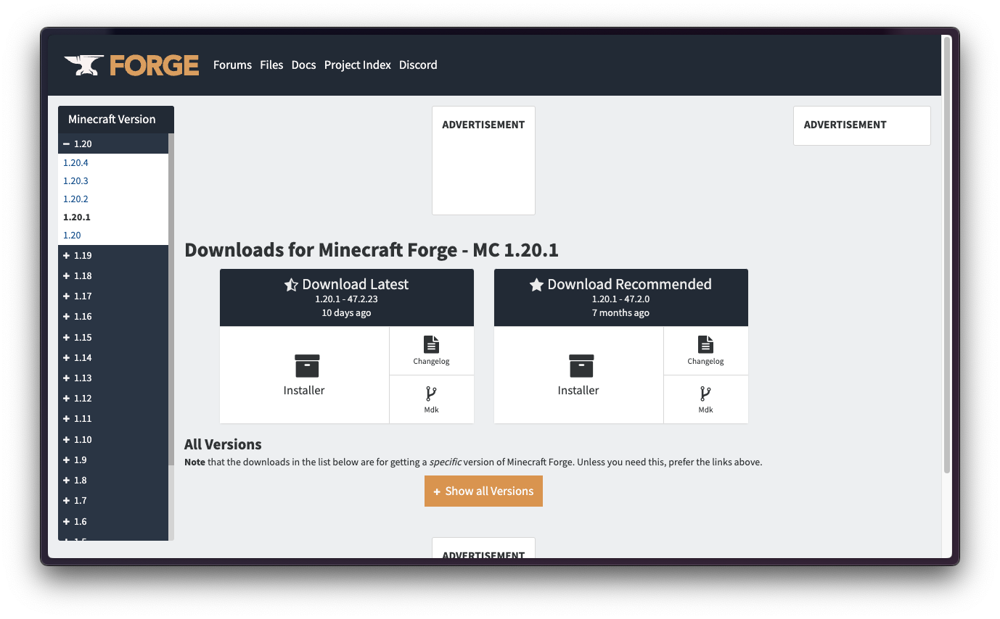

基本概念
- Minecraft 是一個 Java 軟體，他必須仰賴 Java Development Kits (JDK)，大部分已經要求使用 Java 8 以上的版本。
- 根據 Minecraft 1.20.2 則升級到 OpenJDK 17.0.8
- 目前伺服器至少分為三類
- 原生伺服器 (Vanilla 版本，原生 Minecraft)
- 模組伺服器 (對遊戲最大程度地擴充，但要求玩家都需要安裝相對應的模組。)
- 插件伺服器 (以原生 Minecraft 客戶端為底線，提供伺服器端的互動功能。)
- 他是一個網路上的伺服器
- 如果你對網路相對不熟悉，建議可以先了解一下 TCP/IP (我有空再寫一篇文章介紹)
- 如果你想要跟朋友一起玩，並且不知道怎麼設定網路，可以使用虛擬網路 （Virtual Network），如: LogMeIn Hamachi、ZeroTier、Radmin VPN
- 任何額外的軟體都建議要謹慎評估跟使用，隨意下載可能會造成中毒。
- 可以參考這篇 虛擬網路比較
- 設定 Router 將 Port forward 至廣域網路也可以實現讓大家連線。
- 但也存在相對應的管理風險，如：DDoS、RCE (前陣子的 log4j) 等攻擊。
模組伺服器安裝 (Forge)
JDK 安裝
於 Windows/Linux/Mac 安裝
目前建議可以直接安裝最新版本，目前版本為 Java SE 21，展示的伺服器將使用 OpenJDK 21.0.2 2024-01-16 LTS，請注意版本更新，未來的某些伺服器可能會不支援。
在 Windows 上安裝 JDK，可以直接下載安裝程式並執行，依照指示完成安裝即可。在 Linux 和 Mac 上，可以透過套件管理工具 (如 apt、yum、brew 等) 直接安裝，或是下載壓縮檔後解壓縮至指定路徑。安裝完成後，記得設定環境變數，將 Java 的執行檔路徑加入 PATH。
Linux 透過 SDKMan 安裝
安裝可以參考 SDKMan Installation
1 | # Download and Run installation script |
如何使用則可以參考以下指令
安裝 21.0.2:
1 | sdk install java 21.0.2-tem |
安裝最新版:
1 | sdk install java |
在 Linux 上，除了透過套件管理工具安裝外，也可以考慮使用 SDKMan 這類的工具來管理多個版本的 JDK。透過簡單的指令就能安裝、切換不同版本的 JDK，相當方便。
Forge 伺服器下載
示範版本會使用 Forge 1.20.1

這是我在 Linux Server 下的指令:
初始化資料夾
1 | mkdir -p ~/service/minecraft/forge |
注意：以下指令可能會過時，請根據實際狀況修改。可以參考Setting up a Minecraft Forge Server。
1 | # ~/service/minecraft/forge $> |
理論上最後會輸出，意思是安裝成功，可以刪除安裝檔了。
1 | The server installed successfully |
根據其他人的狀況，即便成功，也可能會出現一些錯誤。（這些錯誤會影響伺服器啟動）
伺服器安裝成功後，資料夾如下所示：
1 | total 6.9M |
到這裡你就成功安裝 Minecraft Forge 伺服器了！！
如果你在 Windows 下，可以執行 run.bat 就可以啟動伺服器了。
如果是在 Linux Server 下，可以執行 ./run.sh 就可以啟動伺服器了。
伺服器設定
首次啟動伺服器後，會在目錄下產生一些設定檔和資料夾，如 server.properties、eula.txt、mods 等。可以透過編輯這些檔案來調整伺服器設定，如遊戲難度、視距、玩家人數上限、允許使用的模組等。
其中 eula.txt 是使用者授權合約，必須將 eula=false 改為 eula=true 才能啟動伺服器。mods 資料夾則是放置模組檔案的地方，從各大模組網站下載的 .jar 檔都要放到這裡才能啟用。
調整設定後重新啟動伺服器即可套用新的設定。建議在啟動前先備份一下 world 資料夾，以免發生意外導致地圖資料遺失。
模組管理
模組的相容性有時會出現問題，因此在新增或移除模組時要特別注意。建議先在本機的測試環境下測試模組是否能正常運作，沒問題後再將模組檔案送到伺服器的 mods 資料夾中。
如果要移除某個模組，除了從 mods 資料夾中刪除檔案外，也請一併刪除該模組在 world 資料夾中產生的相關檔案，否則可能會造成遊戲崩潰或存檔毀損等問題。
最後，別忘了提醒其他玩家也要安裝相同的模組，版本也要一致，才能順利連上伺服器一起遊玩。
總結
架設 Minecraft 的 Forge 模組伺服器並不困難，只要準備好 Java/JDK 環境，下載並執行 Forge 安裝程式，再稍微調整一下設定檔，就可以開始運作了。
模組的部分雖然較為複雜，但透過謹慎的管理和測試，也是能夠穩定運行的。如果遇到任何問題，都歡迎在網路上尋求社群的協助。
希望這份指南能夠幫助大家架設出心目中理想的 Minecraft 伺服器，祝各位遊戲愉快！